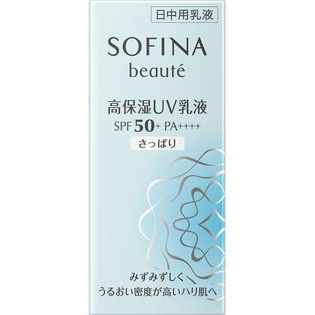

返回列表
产品名称：ソフィーナボーテ 高保湿UV乳液 SPF50+PA++++ さっぱり

花王 ソフィーナボーテ 高保湿UV乳液 SPF50+PA++++ さっぱり ３０ＭＬ
メーカー 花王
JANコード 4901301325310
商品の特徴
朝のみ使用で約３ヶ月分
- 成分・分量
- シクロペンタシロキサン、ジメチコン、酸化亜鉛、エタノール、メトキシケイヒ酸エチルヘキシル、水、グリセリン、タルク、ジカプリン酸ネオペンチルグリコール、ジエチルアミノヒドロキシベンゾイル安息香酸ヘキシル、BG、（メタクリル酸ラウリル／ジメタクリル酸グリコール）クロスポリマー、ポリシリコーン-9、酸化チタン、ポリメチルシルセスキオキサン、セチルPGヒドロキシエチルパルミタミド、アスナロ枝エキス、ローズマリー葉エキス、チューベロース多糖体、ショウガ根エキス、ユーカリ葉エキス、スクワラン、メチコン、PEG-12ジメチコン、PEG-3ジメチコン、PEG-32、シリカ、アルミナ、トコフェロール、水酸化Al、含水シリカ、香料
- 用法及び用量
- ＜使用方法＞
よく振って適量（直径2cmの円に広がるくらい）を顔全体になじませます。